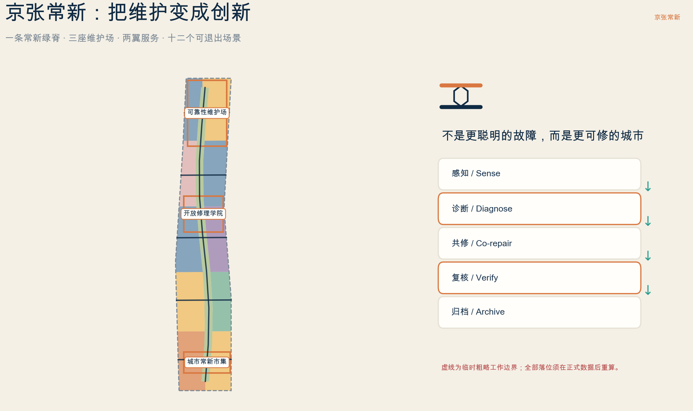
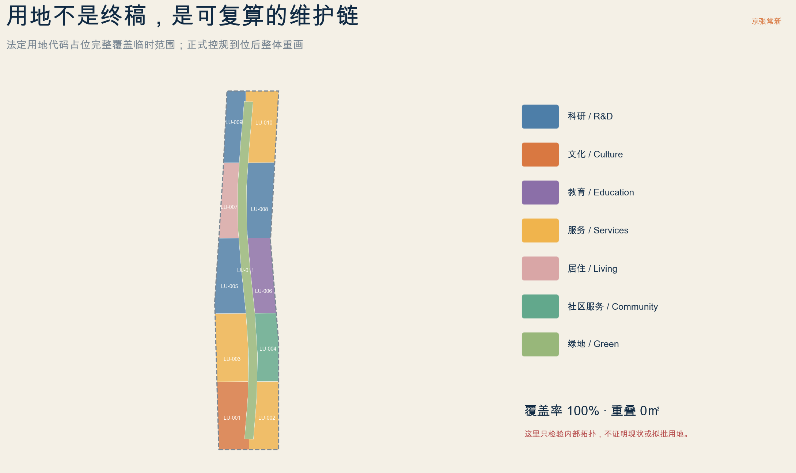
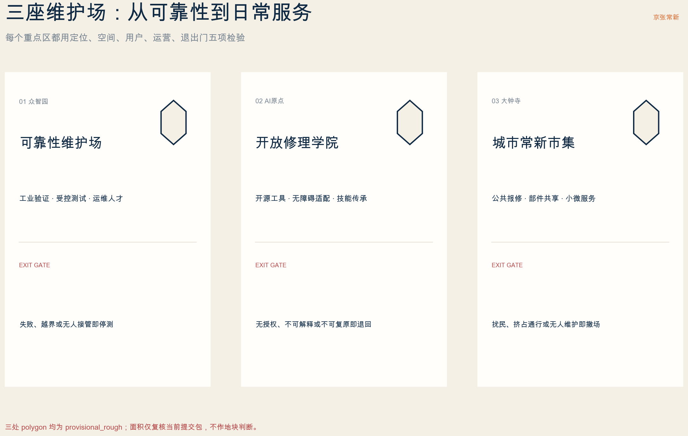
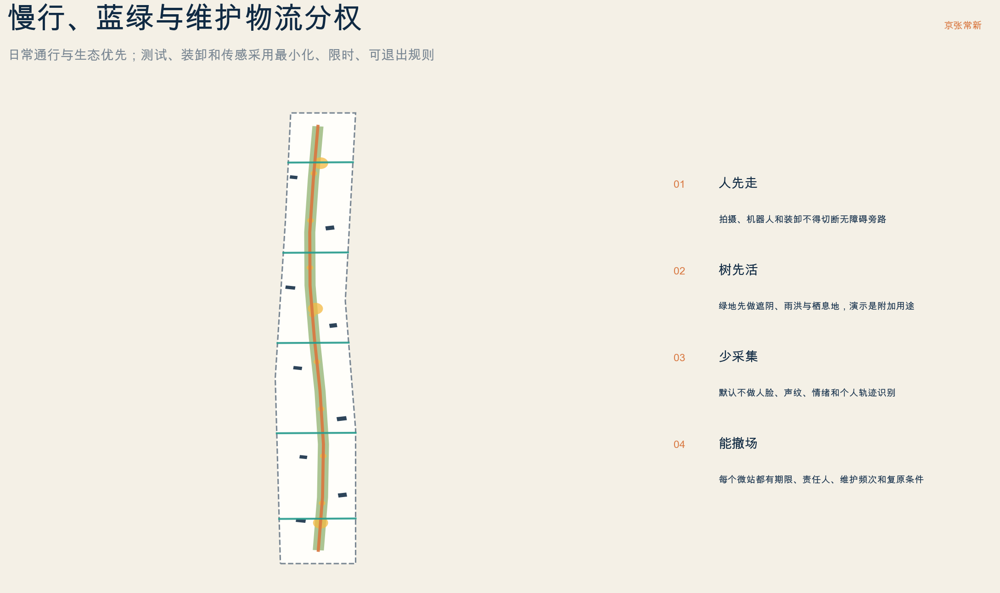
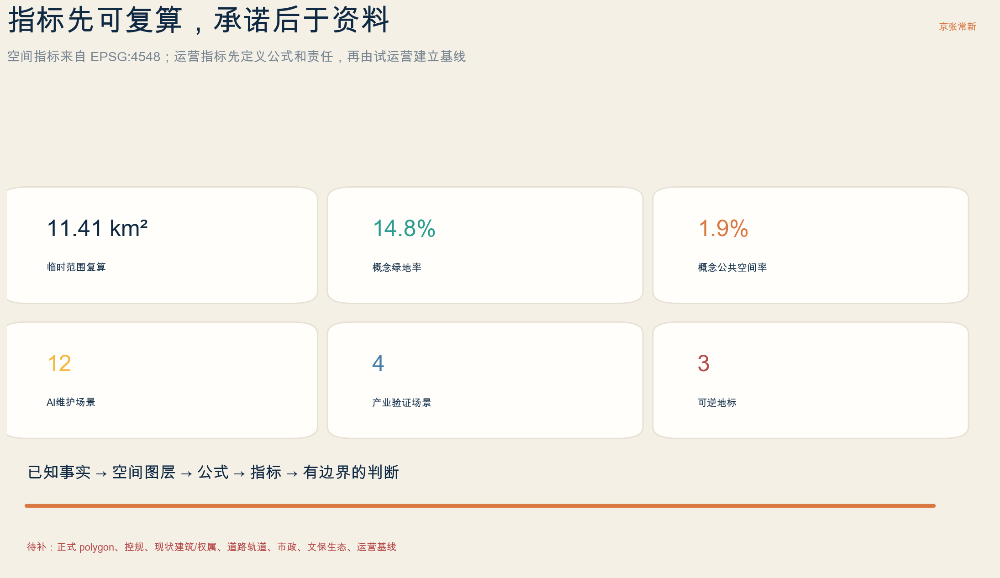

京张常新 / JINGZHANG MAINTENANCE COMMONS：把维护变成创新，把可修复性变成城市权利
以一条常新绿脊、三座维护场、两翼服务和十二个可退出场景，把铁路百年的维护文化、中关村工程能力与 AI 可诊断性组织为开放、可修、可复核的城市创新基础设施；全部落位均为 provisional 概念建议。
京张常新 / JINGZHANG MAINTENANCE COMMONS
一座 AI 城区的先进程度，不只看它能发布什么，也看故障能否被发现、责任能否被找到、设施能否被修好、服务能否被复核、系统能否安全退出。
设计依据与资料清单
本方案首先服从北京市规划和自然资源委员会海淀分局公告确定的三层范围、三处重点区、城市设计任务与成果深度，再以面向智能体任务书补充命名、全球案例、AI 场景、人物画像、公共空间、文化叙事与长期运营。用地分类、城市设计和控规表达采用仓库登记的正式参考；正文、九个 GeoJSON、指标、三类矩阵、双语图件、离线网页和 PDF 由同一证据链生成。来源 来源 标准
当前公开资料能确认公告文字面积与任务，但不能确认精确边界、现状建筑、权属、道路轨道红线、市政容量、文保、生态和法定控制指标。提交中的 SITE-001 与三处重点区均来自仓库维护者提供的临时粗略工作几何，持续标注 official_boundary=false、geometry_role=provisional_constraint、boundary_precision=provisional_rough。它们只用于方案生成、结构化自检和设计讨论，不是 official redline、地块边界、审批依据或精确面积依据。来源 空间数据 深度
因此，本方案严格区分三种陈述：
- 已知事实：公告任务、公告约面积、仓库登记来源及图层自检结果。
- 设计建议：京张常新品牌、空间结构、场景、项目、运营与概念指标。
- 待确认事项：正式 polygon、控规、现状、权属、文保生态、市政、工程可行性、运营主体、预算和时间。
外部案例只用机构官网提炼机制，不复制图片、Logo、空间尺度或投资数字，也不把海外政策写成中国本地法规。任何企业、学校、社区或机构在取得书面确认前都不是已承诺伙伴。完整用途边界见 sources.json，待确认事项见 assumptions.json。来源 深度

三层范围工作框架
“京张常新”不把维护理解为物业后台，而把它定义为 AI 创新带的公共基础设施：设备和软件必须可诊断，公共空间必须可照护，建筑必须可适配，服务必须可追责，失败必须可退出。铁路能够跨越百年，靠的不是一次建成，而是持续巡检、修理、校准与交接；这一维护文化与中关村的工程文化、AI 的可解释诊断能力共同构成方案的问题意识。来源 标准
三层范围分别回答不同问题：
| 层级 | 公告约规模 | 本方案的问题 | 交付与退出条件 |
|---|---|---|---|
| 统筹研究范围 | 43.6 平方公里 | 如何形成可靠性研发、维修服务、技能教育、部件循环和公共治理生态 | 只提出区域机制与接口，不新增伪精确红线或伙伴承诺 |
| 总体设计范围 | 11.4 平方公里 | 如何把维护写进更新、用地、慢行、蓝绿、市政、公共服务与风貌 | 正式边界、控规、现状和专业资料到位后整体重画 |
| 三处重点区域 | 合计 368.4 公顷 | 如何在众智园、AI 原点和大钟寺验证产业、教育与日常服务三种维护场 | 每区都有用户、空间、运营、数据和退出门 |
提交粗略范围在 EPSG:4548 下复算约 11,412,825 平方米，只是当前图层的拓扑校核数；公告 11.4 平方公里仍是正式文字依据。官方 polygon 发布时，应同时裁剪用地、建筑、道路、绿地、公共空间、约束和分期，重算全部指标，并重新生成图件、PDF、HTML 与自检，不能只替换边界文件。指标 空间数据 深度
统筹研究范围产业与未来城市研究
主名称“京张常新”借铁路维护中的“常修常新”，英文 JINGZHANG MAINTENANCE COMMONS 强调共享的维护知识、工具、空间与责任，不把城区包装成单一科技展厅。Logo 由两条轨线和一个六角螺栓组成：海军蓝代表可靠底座，铜色代表人工修理痕迹，绿色代表日常生态，黄色只表示测试状态。标识为本方案原创几何，不挪用铁路、寺院、学校或企业标志。来源 深度
总体结构为“一脊三场、两翼十二站”：
- 一条常新绿脊：把慢行、遮阴、雨洪、低扰动检修和公共报修节点叠合，但生态与日常通行永远优先。
- 三座维护场：众智园“可靠性维护场”、北京 AI 原点“开放修理学院”、大钟寺“城市常新市集”。
- 两翼服务：中关村科技服务翼支撑标准、法务、保险、供应链、算力与企业服务；小月河场景翼支撑生态、社区、无障碍和公共空间共测。
- 十二个维护微站：对应十二张 AI 场景卡，以可撤构件而非永久展陈进入日常空间。
七个全球案例只转译可用机制：
| 案例 | 机构页面显示的机制 | 京张转译 |
|---|---|---|
| 新加坡 Punggol Digital District Open Digital Platform | 跨系统互操作、历史回放、情景模拟与园区 living lab 来源 | 在众智园先用合成或清权数据模拟故障、回退和人工接管 |
| Amsterdam Circular Economy | repair map、延长物品寿命、翻新市有物业、公共空间优先复用 来源 | 把维修网点、材料复用和公共采购写进服务网络 |
| Repair Café International | 低门槛共同维修、志愿技能、学习与社区连接 来源 | AI 原点的开放修理台以共修与转介并重，不替代专业维修 |
| Open Repair Data Standard | 用结构化字段记录对象、问题、结果和维修障碍 来源 | 形成最小维护台账，但删除个人信息并限制用途 |
| 欧盟 Right to Repair | 通过制度改善维修可达性与服务生态 来源 | 只借鉴“可维修、可获得部件与服务”的设计问题，不冒充本地法律 |
| 首尔 Sewoon 工业再生 | 保护既有产业生态，让资深技术者与青年创业者协作 来源 | 先保技能与小微经营，再导入 AI 工具和共享空间 |
| EU BAMB | 材料护照与可逆建筑设计支持维护、再利用和拆解 来源 | 建筑先盘点材料与构件，再轻改；拆除只在专项论证后讨论 |
世界级不以巨屏、地标高度或企业数量衡量，而看中小团队能否使用开放设施、维护工是否获得署名与技能上升、障碍用户能否决定适配成功、居民能否拒绝越界采集、失败是否被记录、退出是否能恢复公共空间。指标 深度
总体设计范围城市更新与控规深度城市设计
总体设计以维护链而非单一产业园组织空间：北段侧重可靠性研发和受控验证，中段侧重教育、开源工具与生活配套，南段侧重文化档案、公共报修和小微维修服务；常新绿脊提供连续慢行和低扰动服务接口。中关村翼负责标准、专业服务和企业转化，小月河翼负责生态、社区与公共空间反馈。该结构是可迁移的功能关系，不是拟议控规图。空间数据 标准 深度
城市更新坚持“先看见、先保养、先盘活、再轻改、最后才判断增量”。九个 BLDG-* 是可靠性测试厅、维护数字孪生室、开放修理学院、无障碍技术诊所、部件与工具库、城市维修市集、材料护照工坊、百年维护档案和常新运营室的节目占位，不是现状建筑，也不表达必建或拆除。正式深化应逐栋完成测绘、权属、租赁、结构、消防、文保、能耗与无障碍审计。空间数据 深度
用地 GeoJSON 采用 0802 科研、0803 文化、0804 教育、05 商业服务、0701 居住、0702 社区服务和 1401 公园绿地代码，完整覆盖临时工作范围且无重叠。它只证明内部拓扑与功能逻辑一致，不证明现状用地、拟批用地或法定混合比例。指标 指标 标准
风貌避免“巨屏 + 霓虹科技蓝”的同质化。建议采用可见维修痕迹、可拆设备盒、耐久材料、低眩光状态标识和诚实的结构节点；新增层与旧建筑可辨但不抢历史轮廓。体量、高度、屋顶、界面、视廊和色彩须在正式城市设计与文保条件下落到地块。标准 深度

三处重点区域详细设计
三处重点区都采用“定位—空间—用户—运营—数据—退出门”的同一模板。由于 polygon 为 provisional，以下是方向性详细设计，不是地块方案、工程方案或政府决定。空间数据 深度
众智园：可靠性维护场 / Reliability Yard
定位为模型、智能终端、传感器、机器人和园区运维流程的低公众暴露验证区。空间建议由受控测试厅、故障回放室、部件隔离库、人工接管席和小型公开观察窗组成；对外交通、物流与公众慢行分权，设备测试设物理隔离、低速、现场安全员和急停。数据优先使用合成、脱敏或经授权的资产数据，不采集无关人脸、声纹和个体轨迹。空间数据 来源
进入开放场景的门槛是：故障分类清楚、回退可用、人工接管有人、网络与设备隔离有效、能耗声光和消防可接受。任一不满足，就停留在封闭试验、降低复杂度或退出，不用“智慧化”包装不可控风险。空间数据 深度
北京 AI 原点：开放修理学院 / Open Repair Academy
定位为高校师生、开发者、工匠、维护工、居民、障碍用户和初创团队共同学习与修理的城市学院。空间建议包括开放修理台、无障碍技术诊所、部件与工具库、材料护照工坊、安静学习室和小型驻留；提及周边高校与艺术资源只表示公告中的区域资源线索，不假定合作、产权或运营关系。空间数据 来源
学院不鼓励无授权拆机。维修对象必须先确认所有权、保修、产品责任、网络安全、部件来源和专业资格；高压、燃气、医疗、交通和关键基础设施直接转介有资质主体。障碍用户对辅助技术适配拥有最终成功标准，AI 只能给建议，不能替代使用者和专业人员。指标 深度
大钟寺：城市常新市集 / Civic Maintenance Market
定位为公共报修、小微维修、部件共享、材料循环、服务信息和年度公开年检进入日常生活的城市客厅。空间建议以可撤市集、维修服务柜台、工具借用、材料样本、投诉与转介台组织，排队、装卸和演示不得挤占通勤与无障碍路径。大钟寺站一体化、四象限连通、规划绿地复合利用和文保关系均须专项审批，本案不作已批准判断。空间数据 标准
市场以服务质量而非客流为核心：公开维修结果、未修原因、转介、保修、投诉响应和退出记录；对小微经营者设置公平费用、可迁移工具和不锁定单一平台的数字接口。扰民、无维护、挤占公共通行或责任失联时，摊位和数字服务都应暂停或撤场。来源 深度

AI 创新生态、人才画像与 AI+ 场景
维护不是 AI 对城市单向监控，而是多类使用者共同定义问题、证据与成功。七类核心人物为：①设施维护工与运营者；②AI 工程师与创业团队；③居民与老年使用者；④障碍人士与辅助技术用户；⑤学生与青年工匠；⑥小微商户、租户和场地经营者；⑦规划、建筑、结构、消防、交通、市政、生态、文保、数据与法务专业者。指标 来源
十二张场景卡把服务对象、空间、最小数据、人工复核、运营角色和退出风险放在同一行。★为产业测试验证场景：
| ID / 场景 | 空间与对象 | 数据、人工复核与退出门 |
|---|---|---|
| SC-01 公共空间报修分诊 | 八处维护微站；居民、维护工 | 只收位置、设施类别、故障和紧急度；人工派单。含个人信息、无法确认权属或非本职责时转介 |
| SC-02 无障碍路径共同审计 | 常新绿脊及横向接口；障碍用户、交通与设施人员 | 不追踪个人；由障碍用户实地定义连续性和等价旁路。发现阻断即先临时排障再进入工程程序 |
| SC-03 蓝绿健康巡检 | 常新绿脊；园林、生态与社区 | AI 只提示异常，不做树木处置决定；生态专业者与现场复核决定是否干预 |
| SC-04 ★设备可靠性沙盒 | 众智园受控测试厅；设备商、运维团队 | 记录故障、回退、接管与能耗，不接入无授权系统；无法隔离或无人接管即停测 |
| SC-05 ★智能终端可修性实验室 | 众智园；硬件、软件、维修与安全人员 | 验证开放接口、部件可达、日志和安全隔离；保修、责任或网络安全不清即不开机 |
| SC-06 ★维护数字孪生回放 | 众智园；园区运营、研究者 | 优先使用合成/清权数据模拟负荷和故障；模型误报或无法解释时只作研究，不自动派工 |
| SC-07 ★机器人检修受控路线 | 众智园围合路线；工程师、无障碍观察员 | 低速、围合、安全员、物理急停与等价旁路；越界、失联、堵路或公众不适即退出 |
| SC-08 开放修理台与部件库 | AI 原点；居民、学生、工匠 | 共同维修并记录问题、结果与障碍；危险设备、有资格要求或部件不明时转专业服务 |
| SC-09 辅助技术适配诊所 | AI 原点；障碍用户、工程师、康复和无障碍人员 | 使用者决定成功标准与数据保留；未经同意不训练模型，适配失败可恢复原状 |
| SC-10 建筑材料护照 | AI 原点与存量建筑；建筑、结构、施工和运营者 | 记录构件、状态、来源、可拆性和再用条件；未测绘、未鉴定或含危险材料时禁止再用 |
| SC-11 百年维护档案 | 文化档案与京张公共界面；文史、铁路记忆持有人、学生 | 史实、口述、推测和 AI 合成分层；文史与社区双重复核，争议内容并置或撤回 |
| SC-12 常新周与公开年检 | 大钟寺及三场轮值；公众、运营者、企业 | 发布成功、失败、投诉、维护与退出的去个人化记录；无人负责或数据越界时不举办公开展示 |
场景状态分为“研究、受控测试、限期公共服务、暂停/归档”四级，必须在物理入口和数字界面可见。任何 AI 输出都保留具名人类复核者和非数字反馈路径；公共报修不能演变为对居民、维护工或小商户的绩效监控。指标 指标 深度
用地、建筑规模与拆改留方案
概念绿地约占当前临时范围 14.76%，概念公共空间约占 1.93%；九个节目占位基底合计约 101,816 平方米。前两者来自提交图层复算，后者只表达节目所需的占位关系，不能推导建筑总规模、容积率、建设量或投资。指标 指标 指标
拆改留采用五步门：
1. 先确认建筑是否真实存在、权属和租赁关系。 2. 再完成结构、消防、文保、能耗、环境与无障碍调查。 3. 优先保留有价值且能安全适配的建筑和小微产业生态。 4. 用可逆内装、设备盒、共享接口和分时运营轻改造。 5. 拆除只在公共利益、全生命周期碳、租户安置、替代方案与法定程序均完成后讨论；本方案不标“必拆”。
建筑形态按三类维护需求深化：可靠性设施需要隔离、荷载、物流、消防和可见急停；学院需要自然采光、可分隔长桌、安静室、无障碍卫生间和安全工具柜；公共市集需要排队不占路、可撤摊位、清楚价格、投诉转介和低眩光界面。空间数据 来源 深度
开发强度使用“known / design proposal / unknown”管理。已知是公告面积和任务；设计建议是功能关系与可逆构件；unknown 包括 FAR、总楼面、高度、密度、退线、停车和公共设施标准。保持 null 是专业克制，不是用生成数字填满表格。指标 指标 指标
交通、轨道、市政与公共服务设施
ROAD-001 是约 9.15 公里的概念常新慢行主轴，另有五条横向无障碍接口。它们表达“优先联系”，不是现状道路、铁路、公园边界或拟定红线。跨越铁路、快速路、河道或封闭地块的位置必须另做交通、工程、文保、生态、洪评、权属和投资论证。空间数据 指标 深度
交通分权遵循四条规则：
- 人先走：演示、装卸、机器人和排队不得切断连续无障碍旁路。
- 公交通勤优先：轨道出入口、客流、接驳和四象限连通以正式交通资料为准，近期只使用可撤导视和预约分流。
- 少车合并：维修物流采用边缘换装、小型推车、合并订单和避峰窗口，不占消防与无障碍空间。
- 测试围合：机器人只在许可、低速、围合、现场安全员和物理急停条件下运行。
市政与新型基础设施分三层：最小资产台账和报修协议；受控传感、边缘处理和角色权限；经容量论证后的电力、通信、制冷、消防和设备扩容。没有正式容量和网络安全审查时，只部署可撤设备并限制并发。预测性维护只能排序待核查事件，不能自动关闭生命安全设施、惩罚维护工或替代专业签字。来源 深度
公共服务包括开放修理台、辅助技术诊所、部件与工具库、小微维修转介、材料护照、维护工培训、投诉与退出台。服务空间必须有可达时段、价格与责任说明、专业转介、儿童和照护者休息、线下入口和不使用 App 的等价路径。空间数据 深度

蓝绿空间、公共空间与城市风貌
常新绿脊首先是遮阴、雨洪、栖息地、步行骑行和日常休憩空间，其次才是检修展示与低扰动服务通道。传感默认不采人脸、声纹、情绪和个人轨迹；灯光向下、限时、低眩光；设备不得伤树、硬化根区或封闭主要路径。实际京张遗址公园、清河/小月河及树木关系必须用官方文保生态资料重画。空间数据 深度
三处 AI 朝圣地标不是大型建筑，而是保护范围外、可逆、可维护的公共原型：
1. 众智园“第一颗螺栓 / FIRST BOLT”：展示一次可靠性测试的版本、故障、人工接管和修复记录；不把算法分数冒充安全认证。 2. AI 原点“开放修理台 / OPEN REPAIR BENCH”：让工具、部件、问题、贡献者、成功与未修原因可见；危险维修直接转介专业主体。 3. 大钟寺“百年维护档案 / CENTURY MAINTENANCE LEDGER”：把铁路维护记忆、城市更新、公共服务和 AI 系统版本分层记录；不占用、改造或拟人化文保本体。
文化叙事不是“旧铁路 + 新屏幕”，而是三种维护文化的接力：京张铁路说明工程如何被一代代人照护；中关村说明技术如何通过调试、复现、修补与同行批评进步；AI 新文化必须承认模型会漂移、传感会误报、设备会老化、数据会越界，因此把可诊断、可修、可接管、可退出写进公共价值。来源 指标 标准
公共空间组件库包括带扶手座椅、遮阴、工具柜、部件抽屉、状态标识、无障碍报修、非数字反馈、低眩光照明和可撤电源盒。每件组件都必须有安装期限、责任人、维护周期、备件和撤场复原条件；“无人维护的维护地标”应在年检中直接退出。空间数据 深度
更新项目清单、实施政策与分期计划
十二个更新项目按“制度—技能—服务—空间—重资产”排序：
| 项目 | 近期交付 | 进入下一阶段的门槛 |
|---|---|---|
| P01 最小资产与维修台账 | 设施 ID、问题、结果、障碍和责任 | 数据最小化、权属、用途和删除规则通过 |
| P02 京张常新服务协议 | 响应、转介、复核、投诉、退出模板 | 真实 owner、operator 和服务等级确认 |
| P03 三个可撤公共房间 | 可靠性庭、开放修理台、常新市集原型 | 通行、消防、噪声、维护和复原通过 |
| P04 无障碍路径共审 | 障碍用户参与的连续性基线 | 真实整改责任和预算确认 |
| P05 开放修理学院课程 | 安全、诊断、部件、软件、材料和伦理 | 专业资格、责任与工具安全确认 |
| P06 辅助技术适配诊所 | 使用者主导的小规模服务 | 医疗/产品责任、隐私和转介机制通过 |
| P07 部件与工具共享库 | 借用、归还、校准、报废和转介 | 备件来源、保险和运维成本可持续 |
| P08 材料护照试点 | 选定存量建筑构件盘点 | 测绘、鉴定、危险材料和再用标准通过 |
| P09 小微维修服务网络 | 价格透明、平台可迁移、专业转介 | 小微公平、租金和数字锁定审查通过 |
| P10 可靠性验证沙盒 | 四项产业测试的受控原型 | 网络、设备、消防、接管和独立复核通过 |
| P11 百年维护档案 | 史实、口述、推测、合成分层 | 文史、社区、版权和撤回流程通过 |
| P12 京张常新周 | 年度公开服务、失败与退出报告 | 不扰民、可维护、无数据越界且有人负责 |
分期对应 geometry/phasing.geojson：近期先建立台账、协议、基线与可撤微站；中期在证据支持下开放学院、诊所、部件库、材料护照和跨区服务；长期才评估资本性可靠性设施与市政扩容。每期都有停、降级、转室内、归档或恢复场地的路径。空间数据 指标 深度
建议政策工具包括：维修与部件信息模板、开放接口与数据可迁移条款、维护工署名和培训、无障碍共同采购、材料护照、公共空间退出保证、轻改优先和小额试运营。它们都是供主管部门、专业团队、运营者与公众深化的建议，不是已确定法规、财政、采购或招商安排。来源 深度
长期运营采用“每日服务、每月共修、每季演练、半年红队、年度年检”：日常接受报修与转介；每月开放修理台；每季跨校企社维护冲刺；每半年验证故障、回退、机器人、无障碍和数据边界；每年举办概念性 JINGZHANG MAINTENANCE WEEK，公开成功、未修原因、投诉、维护成本和退出记录。七方人类治理组由居民、维护工、障碍用户、技术、专业安全、生态文史和运营代表组成，AI 只辅助整理，不参与最终批准。来源 标准
指标体系、面积复算与合规矩阵
空间指标由 EPSG:4326 交换几何投影到 EPSG:4548 复算：临时范围约 11,412,825 平方米，概念绿地率约 14.76%，概念公共空间率约 1.93%，九个节目占位基底约 101,816 平方米，常新慢行主轴约 9,154 米。它们衡量当前提交图层的内部一致性，不是正式规划指标或现状统计。指标 指标 指标
运营指标先定义公式和责任，再由试运营建立基线：
- 首次响应中位与 P95：从有效报修到具名人工确认的时间。
- 一次修复率：经使用者和专业人员共同确认恢复功能的工单 / 关闭工单。
- 可转介率：无法现场维修但给出明确专业路径的工单 / 未修工单。
- 回退成功率：受控测试中恢复到安全状态的事件 / 触发回退事件。
- 无障碍连续率：通过障碍用户实地共审的关键路径 / 审核路径。
- 合法部件复用率：完成来源、状态、责任和适配记录的复用部件 / 全部复用部件。
- 公共空间恢复时长：退出触发到设备撤场、场地复原和复核完成的时间。
- 技能转移：完成安全课程并经实践复核的维护工、学生和居民数量；不得用来给个人排名。
没有运营主体、采集方法和基线时，上述指标不设假目标。涉及隐私、生命安全、关键基础设施或劳动管理的指标不得只凭 AI 自动生成。compliance_matrix.json 覆盖公告 1.3、1.4、1.5 与 agent.1—agent.6；standard_matrix.json 区分 mandatory 标准和建筑专业资料缺口；design_depth_matrix.json 以“可读判断 + 图层 + 指标或 unknown + 假设 + 放行门”完成 15 项深度。标准 深度

风险、版权与合规说明
八道门贯穿所有场景：
1. 来源与空间门：provisional 只作构图；正式 polygon 和专业资料不到位，不进入地块和工程判断。 2. 权属与权限门：没有资产所有权、保修、操作权或数据授权，不拆机、不接入、不采集。 3. 生命安全门：消防、医疗、燃气、交通、电力等关键设施由有资质主体负责，AI 不作最终签字。 4. 隐私与劳动门：默认不做人脸、声纹、情绪和个人轨迹识别，不把报修变成员工或居民绩效监控。 5. 技术与网络门：测试可隔离、可急停、可回退、有人接管；无法解释的输出只作线索。 6. 公共空间门：通行、无障碍、生态、声光、消防、文保任一不满足，就转室内、降级或撤场。 7. 服务公平门：价格、转介、投诉、数据用途和平台迁移清楚；小微主体与无 App 用户有等价入口。 8. 退出复原门：责任失联、持续扰民、越界采集、重大误判或维护中断时，暂停服务、隔离资产、通知相关方、保留最小审计证据、撤设备并恢复公共空间。
版权方面，文字、原创标识、代码生成图形、设计几何、HTML 与 PDF 为本次提交生成；外部网页只作短摘要和链接，不复制图片、Logo 或大段文本。图件使用本机系统字体栅格化，PDF 只嵌入所需字形子集，不提交字体文件。完整声明见 report/copyright_statement.md，许可暂选 COMMUNITY-DISPLAY-ONLY。来源 深度
正式深化至少需要规划、城市设计、建筑、结构、消防、交通、轨道、市政、景观生态、文保、无障碍、产品安全、网络与数据保护、劳动、法务、保险、运营和社区共同复核。任何实施日期、预算、合作、企业进驻、政府支持或奖项，在书面确认前均保持“概念建议 / 参考方案 / 可供专业团队深化研究”。标准 深度
参考资料
1. 北京市规划和自然资源委员会海淀分局，《百年京张 AI 创新带城市设计国际方案征集资格预审公告》，2026。来源 2. open-city-ai/haidian，面向智能体任务书、场地资料包、来源登记与数据缺口清单，2026。来源 来源 3. Singapore JTC, Punggol Digital District Open Digital Platform。来源 4. City of Amsterdam, Circular Economy policy and implementation agenda。来源 5. Repair Café International Foundation；Open Repair Alliance, Open Repair Data Standard。来源 来源 6. Council of the European Union, Right-to-Repair Directive adoption notice。来源 7. Seoul Metropolitan Government, Sewoon industrial regeneration。来源 8. EU Circular Cities and Regions Initiative, Buildings as Material Banks / BAMB。来源
外部资料只影响开放接口、共修、数据结构、产业再生和可逆建筑的方法判断；“京张常新、一脊三场两翼十二站、三处地标、十二场景和八道门”是针对本任务形成的综合设计建议。所有本地空间、法规、资金、伙伴和工程结论仍以正式资料与专业程序为准。来源 深度